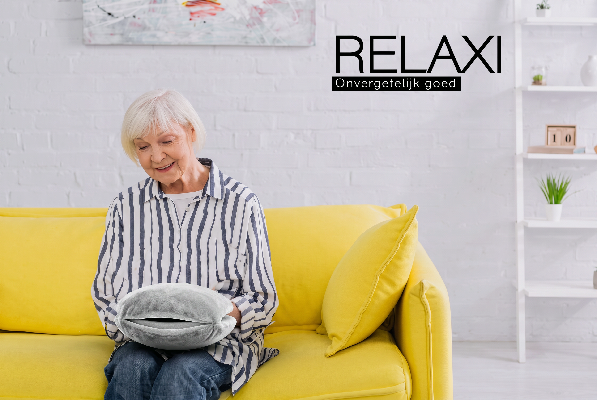
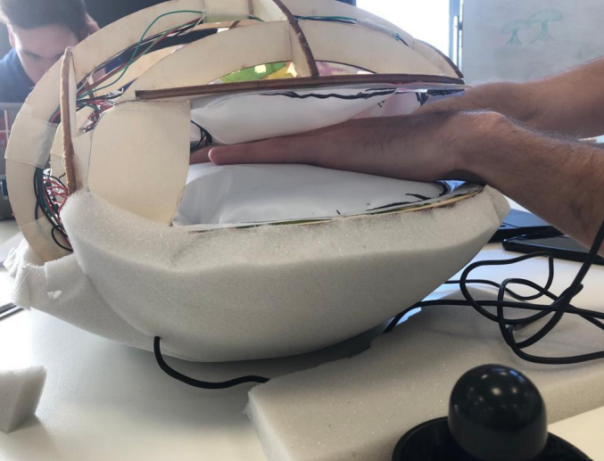
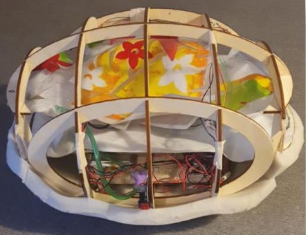

Year 3 - Vegro project
Relaxi.
A soft, sensory hand-resting product that creates a calm moment through gentle pressure and touch.
Comfort through
gentle interaction.
Relaxi was developed for Vegro as a tactile product for people with dementia. It gives the hands a place to rest and explore, creating a quiet activity that can be used independently or with support from a caregiver.
The final direction pairs a soft, lap-friendly form with a simple interaction. The emphasis stayed on a familiar, non-clinical experience that feels inviting in a home or care setting.
How the
electronics work.
A touch input starts the interaction. An Arduino reads that input and runs a timed cycle for the internal air pump. The pump inflates the product's air chambers, creating the gentle pressure that users feel around their hands.
Prototypes made the electronics visible and testable: the pump, wiring and control logic were built into a frame before being translated into the soft enclosure. Feedback from testing shaped further work on pressure, noise and the potential use of a rumble motor for additional sensory feedback.


Building toward
a softer result.
Early models tested air pressure, ease of hand entry and cleanability. The team moved from an exposed structure to a double-layered, removable textile form that better balanced sensory comfort with practical care requirements.
The project demonstrated how a small electronic system can remain in the background while making the tactile experience feel alive.